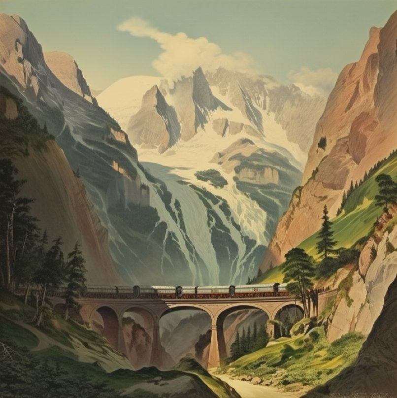
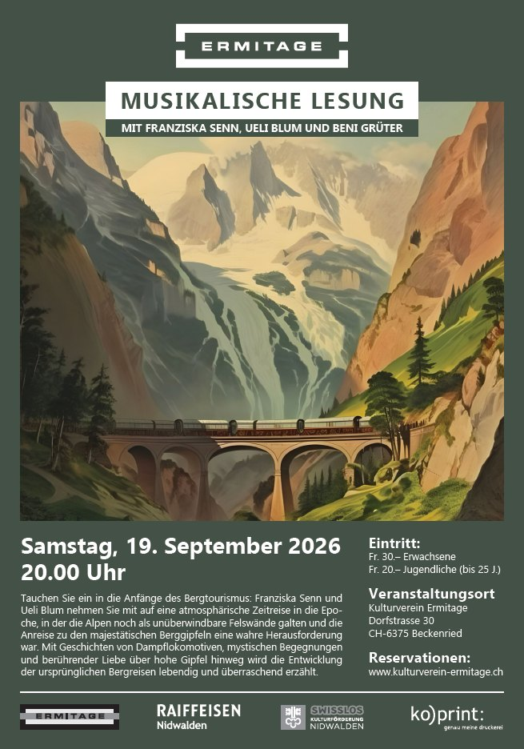

Begeben Sie sich mit uns zu den Anfängen des Bergtourismus. Tauchen Sie ein in eine Welt voller Gipfel, Grüfte, Spitzen und Klüfte!
Unsere Soirée entführt Sie in eine Zeit, in der die Alpen noch unüberwindbare Felswände darstellten und die Anreise zu den majestätischen Berggipfeln eine wahre Herausforderung war. Franziska Senn und Ueli Blum nehmen Sie mit auf eine Reise durch die Geschichte des Bergtourismus, erzählen von schnaubenden Dampflokomotiven, dem Handel mit dem Teufel und der Liebe, die über hohe Berggipfel hinweg reicht.
Wir präsentieren Ihnen Texte von August Strindberg, Alphonse Daudet, J. W. Goethe, Peter Rosegger und vielen anderen: Sagen, Märchen, Gedichte und Geschichten aus drei Jahrhunderten, welche die Anfänge des Tourismus in der Schweiz beleuchten. Diese literarische Reise wird musikalisch umrahmt von Schweizer Liedern, Bergklängen, Klezmer-Melodien und anderen luftigen Klängen.
Mythen, Sagen und Geschichten aus aller Welt kreuzten sich in den Bergen – denn wer reiste, wollte zuhause auch etwas zu erzählen haben. Früher mussten die Alpen zu Fuss, mit Maultieren oder Kutschen überquert werden. Später führte eine Eisenbahn das Tal hoch, dann auch eine ausgebaute Strasse. Der Weg war beschwerlich. Doch die Zeiten haben sich geändert, und die NEAT-Tunnels machen die Unterquerung der Berge noch einfacher.
Doch vergessen wir nicht die Geschichten von Friedrich von Matthisson, der sich in der wilden Berglandschaft verirrte; von Wolfgang Goethe, der seine Sehnsucht nach dem Süden in den Zeilen «Kennst du das Land, wo die Zitronen blühen…» ausdrückte; von Alphonse Daudet, der die Schweiz bereits Ende des 19. Jahrhunderts ironisch als touristisches Casino beschrieb; von August Strindberg, der den Durchbruch beim Gotthardtunnel als das Zusammenführen zweier Liebender erzählte; von Peter Rosegger, der die Angst vor der ersten Bahnfahrt durch einen Tunnel von seinem Grossvater hörte; von Franz Hohler, der die Eröffnungsfeier von Tunneln auf seine eigene, humorvolle Weise kommentierte – und von Herrn Hahn, der nur in Gedanken reist!
Die Soirée spricht sowohl ein kulturinteressiertes als auch ein musikliebendes Publikum an. Wir präsentieren Geschichten und Melodien im Spannungsfeld zwischen Dur und Moll, von amüsanten Gedichten über leidenschaftliche Lieder bis hin zu melancholischen Weisen.
Nächste Aufführung
Samstag, 19. September 2026, 20.00 Uhr
Kulturverein Ermitage, Dorfstrasse 30, 6375 Beckenried
Eintritt: Fr. 30.– / Jugendliche bis 25 Jahre Fr. 20.–
Reservationen: www.kulturverein-ermitage.ch
- Spiel und Lesung
- Franziska Senn, Ueli Blum
- Musik
- Beni Grüter
